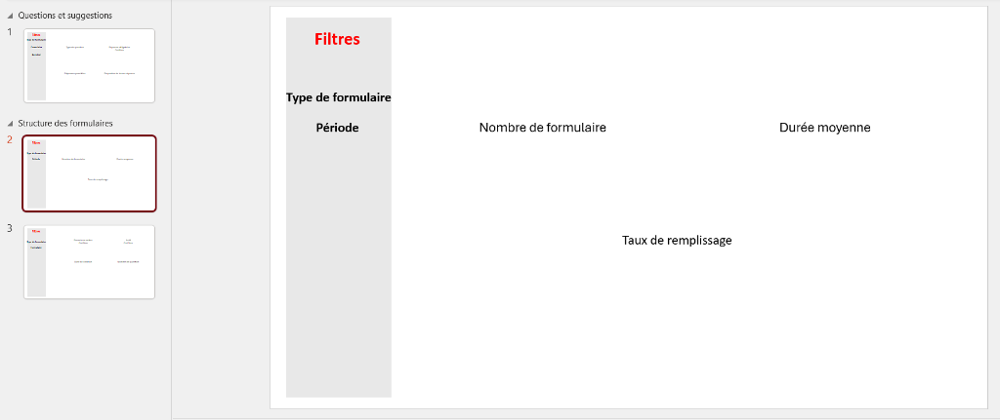
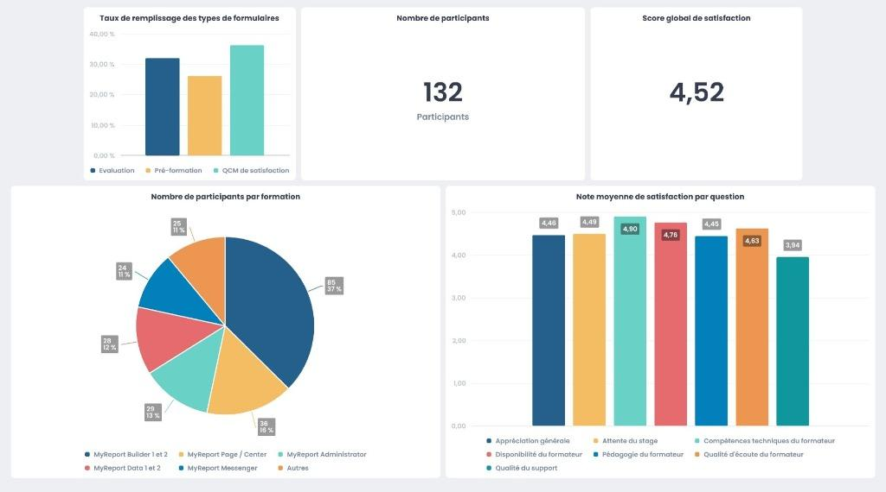

Le stage en chiffres
Compétences mobilisées
SQL Server & MCD
Co-construction d'un Modèle Conceptuel de Données (MCD) avec l'équipe pour restructurer la base SQL Server IGM_SAFFRAN. Écriture de requêtes et scripts d'importation de données.
Data Warehousing (MyReport Data)
Conception du Data Warehouse dans le module Data : jointures de tables, filtres complexes (projets finalisés d'au moins 1 mois), et création de tables d'analyses temporelles (Calendrier).
Création de Reporting (MyReport Page)
Développement de maquettes de tableaux de bord interactifs basés sur une grille, avec intégration d'onglets, de filtres dynamiques multiniveaux, de graphiques et d'indicateurs synthétiques.
Normes Qualiopi
Compréhension des indicateurs obligatoires liés à la qualité de la formation professionnelle : taux de retour, progression des acquis, satisfaction stagiaires, donneurs d'ordres et formateurs.
Présentation de l'entreprise
🏢 IGM — Informatique Gestion Management
ESN (Entreprise de Services Numériques) fondée en 1993, basée à Saran (Loiret, 45), au cœur de la métropole d'Orléans. En 2022, IGM s'est rapprochée de Havana IT & Apps pour former un nouveau groupe (holding NIRVANA).
L'entreprise compte une cinquantaine de salariés et propose une large gamme de services informatiques et décisionnels.
Membre de Fastor GIE, du GEP45, de la Digital Loire Valley et de l'ADIRC.
🛠️ Services & Formations
- Forfait, Régie & TMA : développement d'applications, intégration BI et bases de données.
- Organisme de formation : certifié Qualiopi depuis 2021 dans la catégorie « Actions de formation » (formations MyReport, Power BI, SQL Server, Visual Studio, etc.).
Contexte & Problématique
Situation initiale : IGM dispense de nombreuses formations certifiées Qualiopi. Le suivi des évaluations (questionnaire de pré-formation, QCM final d'acquisition des connaissances, évaluation de satisfaction à chaud et à froid) était auparavant géré via Microsoft Forms et compilé manuellement. Ce processus limitait l'analyse centralisée et compliquait le renouvellement annuel de la certification Qualiopi (nécessaire pour le financement des OPCO).
Ma mission : Structurer l'ensemble des données d'évaluation dans SQL Server et concevoir des tableaux de bord automatisés et sécurisés via MyReport pour fournir aux commerciaux et à la direction des indicateurs d'activité précis, conformes aux exigences de Qualiopi.
Synergie d'équipe : Collaboration étroite avec Antonin (développement de la gestion interne Saffran) et Anthony (développement de l'interface de saisie stagiaire) pour assurer une chaîne de données fluide de la saisie au reporting.
Architecture technique & Modélisation
SQL Server (Base Saffran)
Centralisation des tables d'évaluation et de gestion : TrainingUser (participants), Tutor (formateurs), Project (projets de formation), Form (questionnaires) et Question. Importation et préparation des données historiques pour réaliser des tests viables.
MyReport Data (ETL)
Création d'un Data Warehouse avec jointures (Internes et Gauches). Traitement de la localisation géographique en extrayant les départements et régions depuis le code postal. Modélisation temporelle avec extraction textuelle des mois de l'année.
MyReport Page & Center
Conception d'une structure visuelle en onglets sous forme de grille adaptative. Organisation de filtres dynamiques (Année, Semestre, Mois, Client, Tuteur) et publication sur l'intranet de l'entreprise via MyReport Center.
Règles de gestion implémentées : Pour s'assurer de la pertinence des KPIs, des filtres restrictifs ont été appliqués dans le data warehouse : exclusion des projets de formation de moins d'un mois (encore en cours de modification) et filtrage des projets n'ayant pas de formateur ou de type de formation associés.
Indicateurs & Tableaux de bord conçus
Trois axes décisionnels principaux ont été formalisés au sein du dossier thématique "Acteurs" :
👥 Reporting Participants (Saisie, Progression & Acquis)
Suivi exhaustif du volume de stagiaires (132 au total). Visualisation des taux de complétion des formulaires (évaluation pré-formation, satisfaction, évaluation des connaissances). Analyse de la validation des acquis via les QCM de fin de formation (le taux de présence de 100% étant requis pour la validation finale).
⭐ Reporting Satisfaction (Qualiopi)
Consolidation des réponses aux enquêtes notées sur 5. Calcul de la moyenne de satisfaction globale par formation (ex: score de 4,52/5) et décomposition par question (accueil, pédagogie, compétences techniques, qualité du support, écoute du formateur).
🏫 Pilotage des Formations & Formateurs
Analyse de la répartition des participants selon les modules. Mise en valeur de la formation combinée "MyReport Builder 1 et 2" qui regroupe près de 40% des effectifs, confirmant la préférence des clients pour un apprentissage complet plutôt que par module isolé (Builder 1 ou Builder 2 seuls, représentant ~4% chacun).
Visuels du stage 2025
Maquette de l'interface de reporting — Conception initiale du gabarit de dashboard

Maquette de l'interface de reporting — Conception initiale du gabarit de dashboard dans PowerPoint/MyReport, définissant l'emplacement des filtres (période, type de formulaire), le nombre d'enquêtes, la durée moyenne et les taux de remplissage.
Dashboard de satisfaction final sous MyReport Page — Vue de synthèse interactive

Dashboard de satisfaction final sous MyReport Page — Vue de synthèse interactive présentant le score global de satisfaction (4,52/5), le volume de participants (132), le taux de remplissage par formulaire et la répartition des effectifs par formation.
Déroulement du stage
Le projet s'est articulé sur 12 semaines en intégrant des phases de modélisation de base de données, d'ETL et de mise en page graphique.
Phase 1 — Cadrage & Prise en main (Semaines 1-2)
Prise en main des outils (SQL Server, MyReport, Saffran). Compréhension des indicateurs requis par Qualiopi. Définition du besoin avec le Directeur Commercial et établissement du cahier des charges.
Phase 2 — Modélisation SQL & Saisie (Semaines 3-5)
Co-conception du Modèle Conceptuel de Données. Importation et préparation des données de test. Rédaction de scripts Transact-SQL pour peupler et restructurer les tables de la base Saffran.
Phase 3 — Modélisation du Data Warehouse (Semaines 6-8)
Construction du Data Warehouse sous MyReport Data. Définition des règles de filtrage (projets de type formation de plus d'un mois), modélisation calendaire personnalisée et jointures relationnelles.
Phase 4 — Conception des Rapports & Livraison (Semaines 9-12)
Création des rapports sous MyReport Page. Intégration des graphiques (circulaires, histogrammes, KPI cards). Phase de debug collaboratif pour l'ajustement ergonomique de la saisie. Rédaction du guide d'actualisation des données et livraison finale.
Bilan & Perspectives
Apports pour l'entreprise :
- Centralisation et sécurisation des retours de formation dans SQL Server.
- Reporting Qualiopi entièrement automatisé et actualisable en un clic pour les audits.
- Meilleure visibilité commerciale sur les formations plébiscitées (forte demande pour Builder 1 et 2).
- Simplification de la saisie des formulaires pour les commerciaux et formateurs grâce au debug collaboratif.
Apports personnels :
Ce stage m'a offert une immersion complète dans le cycle de vie d'un projet décisionnel (BI), depuis la modélisation de base de données (MCD) jusqu'au déploiement intranet. J'ai renforcé mes compétences en SQL et découvert les contraintes réglementaires de la formation professionnelle (Qualiopi).